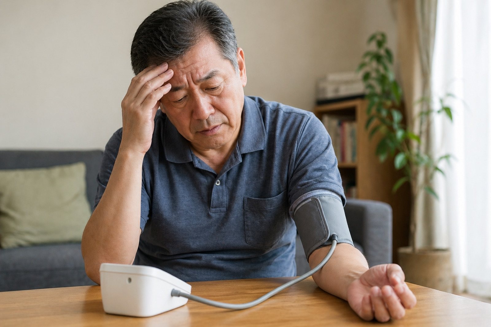

「薬は飲んでいるけど、なんとなく不安が残る」
「数値は下がったけれど、体は楽になっていない」
「できれば薬以外でもサポートしたい」
このようなご相談は少なくありません。
血圧は、自律神経・血流・睡眠・ストレス・体の緊張・食生活など、毎日の積み重ねから影響を受けています。降圧薬は数値を下げる大切な役割を果たしますが、体そのものを整える働きとは少し違います。
鍼灸は、薬の代わりではなく「体側の条件を整える補助的なケア」として、医師の管理と並行してご利用いただいています。
血圧そのものは医師が診ていく領域ですが、その背景にある「自律神経・睡眠・筋緊張・ストレス・血流」は、鍼灸が補助的にサポートしやすい部分です。当院では、薬の代わりではなく、体側の条件を整えるパートを担います。
交感神経が優位な状態が続くと、血管が収縮しやすく、血圧が上がりやすい体の状態になります。緊張・ストレス・睡眠不足は、その引き金になりやすいことが知られています。
眠りが浅い・夜中に目が覚める状態が続くと、夜間の血圧が下がりにくくなり、日中の血圧変動にも影響しやすくなります。
首肩のこわばりや浅い呼吸が続くと、循環や自律神経の働きにも影響しやすくなります。「肩こりと血圧」が関連を感じられる方は少なくありません。
塩分・脂質・糖質のとり方、運動量、体重の変化は、長期的な血圧管理に欠かせない要素です。当院では分子栄養学・運動療法の視点でも、必要な範囲でアドバイスをしています。
血圧の数値そのものを直接コントロールしようとするのではなく、「血圧が安定しやすい体の状態」へ少しずつ近づけていくことを大切にしています。
高血圧に対する鍼灸の研究では、鍼灸単独で薬の代わりになるとまでは言えません。しかし、降圧薬による治療や生活習慣の見直しに鍼灸を併用することで、血圧低下を補助する可能性が報告されています。
実際に、複数のシステマティックレビューやメタ解析では、降圧薬のみの場合と比べて、鍼灸を併用した群で収縮期血圧・拡張期血圧の低下が大きかったことが示されています。また、電気鍼を用いたランダム化比較試験では、特定の経穴への刺激により血圧が低下し、その効果が一定期間持続したことも報告されています。
一方で、研究の質や症例数には限界があり、鍼灸だけで高血圧が治ると断定できる段階ではありません。当院では、医師による診断・服薬管理を大切にしながら、自律神経・血流・睡眠・ストレス・体の緊張を整える補助的なケアとして鍼灸を行っています。
※引用している研究の詳細は、ページ下部の「参考文献・関連研究」をご覧ください。表現は「絶対に効く」ではなく「補助療法として可能性が示されている」という段階として誠実にお伝えしています。
過去に血圧が200を超え、降圧薬を5種類服用されていた方が、医師の管理のもとで通院・施術を続けていく中で、家庭血圧が下がりすぎる傾向が見られました。ご本人が処方医にご相談されたところ、医師の判断で薬を2種類まで減らすことができたケースがあります。
⚠ これは個人の体験です。すべての方に同じ変化が起こるとは限りません。減薬・休薬は必ず処方医の判断のもとで行ってください。当院の鍼灸が直接の原因と断定するものではなく、生活習慣の見直し・睡眠・運動・食事など複数の要素が積み重なって現れた変化です。
首肩の慢性的なはりがやわらぎやすくなる
深く呼吸しやすくなる
寝つきや眠りの質が整いやすくなる
ストレス時の体の反応がやわらぎやすくなる
のぼせ・ほてり・動悸の感じ方が落ち着きやすくなる
家庭血圧のばらつきが落ち着きやすくなる方もいる
血圧の数値そのものを直接保証するものではありません。鍼灸はあくまで補助的なケアであり、医師の管理・降圧薬・生活習慣の見直しと並行して、体側の条件を整えていく流れです。1回で劇的に変わるというより、続ける中で少しずつ整っていくものとお考えください。
セルフケアは血圧管理の土台です。ただし、お薬を飲んでいる方は、自己判断での減薬・中止は絶対に避けてください。生活面の変化があるときも、必ず処方医にご相談を。当院は、その積み重ねを「体側からサポートするパート」を担います。
現在服用中の降圧薬・通院先・家庭血圧の数値・生活リズム・睡眠・運動・食事・ストレスの出方まで丁寧にお聞きします。
「数値は下がったけれど、体は楽になっていない」
「薬をできれば増やさず、体側からも整えたい」
そんな方が安心して通えるよう、医師の管理を尊重したうえで、補助的なケアをご提案します。
医療機関の受診を優先していただきたい場合
胸の強い痛み・息苦しさ・冷や汗、急に起こった強い頭痛、ろれつが回らない、片側の手足の脱力・しびれ、視野の異常、収縮期血圧180mmHg以上または拡張期110mmHg以上が続く、めまいで立てないほど強いふらつきがある場合は、まず医療機関にご連絡ください。脳・心臓・血管の急性のサインがある場合は、施術より受診を最優先でお伝えします。
減薬・休薬についての方針
自己判断での減薬・服薬中止は絶対におすすめしていません。お薬の調整は必ず処方医の判断のもとで行ってください。当院から減薬を促すことはありません。家庭血圧が下がりすぎる傾向が出てきた場合は、まず医師にご相談されるようお伝えしています。
高血圧そのものについては、医師の管理を最優先にしていただきたいため、当院のコラムでは「数値を下げる」ことを目的とした記事は控えています。代わりに、自律神経・睡眠・呼吸・栄養など、土台となる生活習慣について発信しています。
鍼灸単独で降圧薬の代わりになるとは言えません。複数の研究では、降圧薬と併用した補助的なケアとして、血圧低下を後押しする可能性が報告されています。あくまで医師による診断・服薬管理を大切にしながら、補助療法としてご提供しています。
はい、受けられます。服用中のお薬や通院状況をお聞きした上で施術を行います。自己判断での減薬・中止は絶対におすすめしていません。減薬や薬の調整は必ず処方医にご相談ください。
日々の血圧測定と医師との連携を大切にしていただいています。施術中は体調をその都度確認し、めまい・ふらつきなどがあればすぐにお知らせください。実際に降圧薬を服用中の方で、医師にご相談のうえお薬を減らせたケースもあります（医師の判断によるもので、当院の鍼灸が直接の原因と断定するものではありません）。
血圧は生活習慣・自律神経・睡眠・ストレスなど多くの要因が積み重なって変動します。数回で劇的に変わるというより、生活面の見直しと並行して、少しずつ体を整えていく流れが一般的です。
刺激量は細かく調整できます。不安な方には刺さない鍼（てい鍼）もご用意していますので、遠慮なくお伝えください。
薬は続けつつ、体側も整えていきたい
家庭血圧の変動が気になる
首肩のこり・睡眠・ストレスから、根本を見直したい
高血圧は、医師の管理が大前提です。
その上で、自律神経・睡眠・首肩のこわばり・ストレスなど、
体側の条件を整えるサポートとして、鍼灸ができることがあります。
薬の代わりではなく、薬と並走するパートナーとして。
今西健はり・灸院 大阪府八尾市堤町2-30-59
LINE ID: takeshityan
以下は、鍼灸と高血圧の関係を扱った代表的なPubMed掲載論文です。「鍼灸単独で薬の代わりになる」とまでは言えませんが、「降圧薬や生活習慣改善に併用した補助療法として、血圧低下を後押しする可能性」が複数の研究で示されています。なお、研究の質や症例数には限界があり、今後さらに質の高い研究が必要とされています。
Long-Lasting Reduction of Blood Pressure by Electroacupuncture in Patients with Hypertension（Li P, et al.）
高血圧患者を対象としたランダム化比較試験では、特定の経穴（PC5-6・ST36-37）への週1回・8週間の電気鍼により、収縮期血圧・拡張期血圧の低下が見られ、その効果が治療後も一定期間（4週間ほど）持続したことが報告されています。ノルエピネフリン・レニン・アルドステロンの低下も観察され、自律神経系・RAA系の関与が示唆されています。
PubMed で確認 →Acupuncture for lowering blood pressure: systematic review and meta-analysis（Lee H, et al.）
11件のRCTを対象としたメタ解析。鍼単独と偽鍼の比較では明確な効果差は出ていない一方、降圧薬と併用した場合には、薬のみの群と比べて収縮期血圧が平均約8mmHg、拡張期血圧が平均約4mmHg低下したと報告されています。
PubMed で確認 →Is Acupuncture Effective for Hypertension? A Systematic Review and Meta-Analysis（Zhao XF, et al.）
鍼灸を薬に追加した場合、偽鍼＋薬よりも血圧低下幅が大きく、収縮期血圧で約7.47mmHg、拡張期血圧で約4.22mmHgの差が示されました。一方で、鍼灸単独と薬の比較では明確な有意差は出ていません。著者らは「鍼灸は薬物療法の補助療法としては根拠があるが、鍼灸単独で血圧を下げる証拠は不十分」と結論づけています。
PubMed で確認 →Efficacy of acupuncture for hypertension in the elderly: a systematic review and meta-analysis（Wang T, et al.）
高齢者高血圧を対象とした12件のRCT・1,466名のメタ解析。鍼灸＋降圧薬は、降圧薬のみと比べて収縮期血圧で約9.81mmHg、拡張期血圧で約7.04mmHg低下が大きかったと報告されています。著者らは含まれる研究の方法論的な欠点にも言及しており、さらに質の高いRCTが必要とされています。
PubMed で確認 →Acupuncture Regulation of Blood Pressure: Two Decades of Research
鍼灸が脳幹や自律神経出力にどう関わるかを血圧調整の観点から整理した総説。鍼刺激と循環器・自律神経系の作用機序を理解するうえで参照しやすい。
PubMed で確認 →